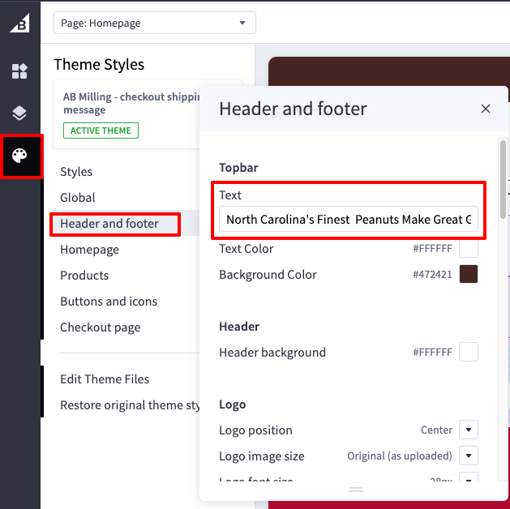

Other
Top Banner (Global)
The top banner is a global banner that appears on all pages of the website. It can be used to display important announcements, promotions, or other information.
To edit the top banner, go to the Page Builder and click on the 'Palette' icon, then in 'Header and Footer'. Please note that it only supports a small text, otherwise, an error will occur when saving or publishing the changes.
